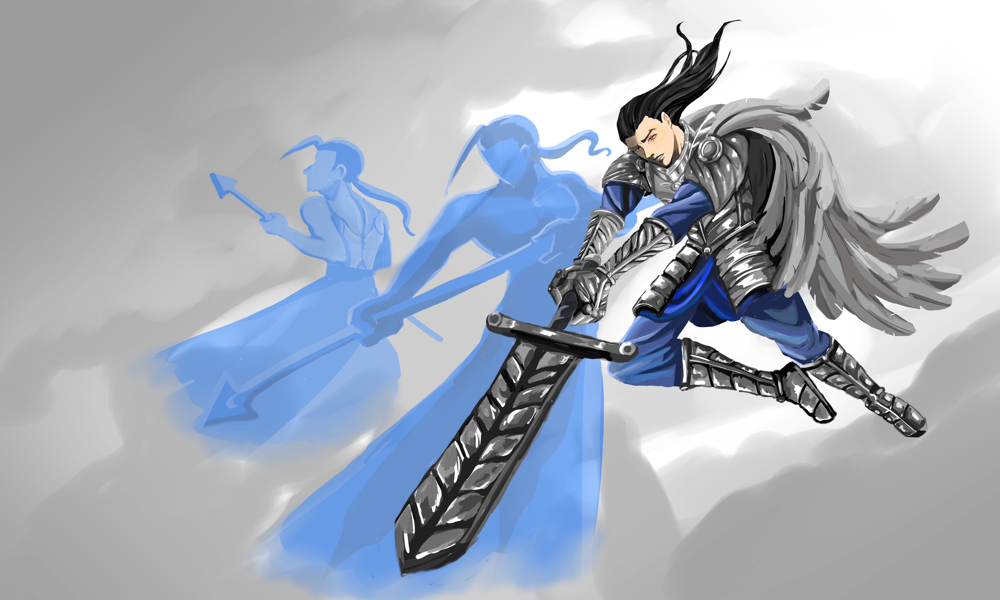

Bio: Etheren was born to a Lukian warrior by the name of Galnir and a mysterious woman named Luna. He followed his father’s footsteps but inherited strange powers. He could summon spirits in battle. They would come to his aid whenever he was in danger. But later, he realized he could also summon them at will to fight alongside him. He used this as an advantage in combat, winning over his enemies. However, his mother warned him to avoid using the spirits with bloodlust. The spirits would start being tainted by evil otherwise. Luna revealed to her son that she was not from Lukia and that she and him had a link to the spiritual world. But she does not tell him about her natal place before disappearing one night. Etheren became resentful, feeling that his mother had abandoned him during his younger years. He tries to keep the spirits under control, but the more he uses them during fights, the harder they are to control and the more violent they become. He is afraid of losing himself because of them.
Etheren walks down the marbled hallway of the Crystalline Order with disciplined footsteps. Clad in armor, his winged cape flows behind him, giving him the appearance of a warrior angel. He finally stops before the huge, tall doors before him with determination. He presses on the handles and enters. Inside there is a dimly lit chamber. He steps in and the doors close behind him.
The dimly lit chamber seems empty. Etheren awaits the Judge who is supposed to test him. He looks around. “Is anybody here?” says Etheren. No answer. He approaches the desk at the center of the room. There is a picture frame over it. He decides to take a look but is surprised by what he sees. He widens his eye. It was a a picture of him, his father Galnir and his mother Luna.
“Etheren,” says a familiar voice behind him.
Etheren quickly turns around, his winged cloak swaying around him. He notices the silvery hair of the estranged woman. She still looked young, but it was his mother Luna.
“Mother? What are you doing here?” asks Etheren.
Luna holds her hands together in prayer. Spirits appear around her. Etheren could feel that they were offensive and he could feel his own powers building up inside him. Unable to control himself, warrior spirits came forth from him. They held their weapons, and charged towards Etheren’s mother.
“No! Mother!” shouts Etheren.
He tries to control his spirits but to no avail. They clash ferociously. His mother's summons are relentless and attempt to attack him. Luna looks at her son harshly.
“You’ve given in to your bloodlust,” says Luna.
Etheren’s eyes start glowing red as he summons more spirits to block the assault. He could not hold on any longer and his spirits became more violent, obliterating the opponents. But they go berserk and attack Luna. They disappear after the final blow and Etheren runs towards his mother who is lying on the stone floor.
“Mother, please, hold on,” says Etheren as he holds her in his arms.
Luna’s eyes are closed as her head rests against her son’s chest.
“Etheren… I warned you.. That the spirits would be tainted by bloodlust…” she whispers with a dying breath.
“I know… this is why I came here.. But I did not expect to find you,” says Etheren with grief.
“I finally have your answer.”
Luna’s final words were not from her but another woman. Luna disappears into particles of light and the other voice resonates in the room. Etheren looks up. A cloaked woman with a shrouded face sits at the desk in the stone room.
“How does it feel exposing your mind?” asks the Judge.
Etheren frowns. The psychic understood his deepest fears. But he did not like the intrusive mental tricks of the Judge. They could know everything about him and all the Chosens, manipulating their minds. He chooses silence.
“You shall prove your worth on the Fields of Eternity,” says the Judge.
The doors swung open behind Etheren as light pours into the room. He was now a Chosen of the Crystalline Order.